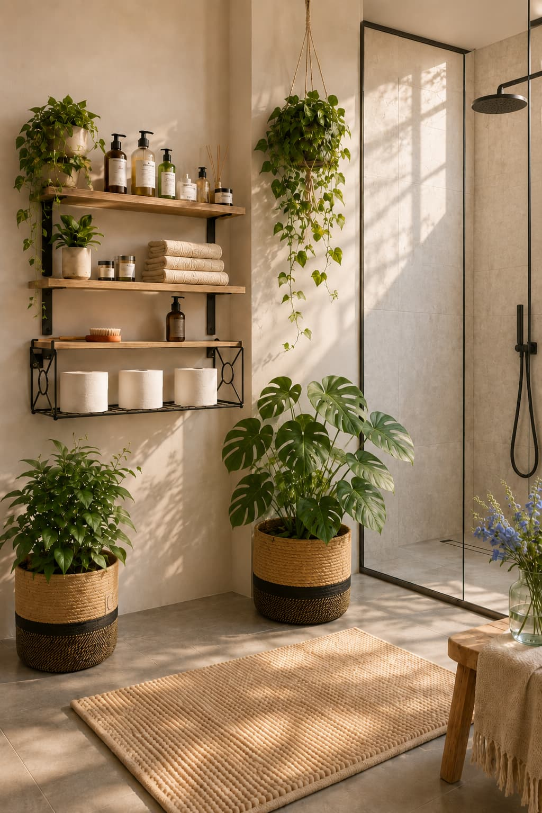

The Tidy Magpie is about finding beautiful, useful ideas for everyday living — the kind of home details that make a room feel calmer, warmer and more considered.
Choose a section below instead of scrolling through one long page.
Ad | Affiliate links. If you buy through one of my links, I may earn a small commission at no extra cost to you.

Living Spaces
Entryway and living room ideas with calm, useful details.

Bathroom
Soft bathroom storage, greenery and calm everyday pieces.

Kitchen
Warm kitchen details, practical storage and useful pieces.

Garden
Outdoor seating, terracotta pots and simple garden inspiration.

Journal
All the latest home looks and thoughtful ideas in one place.